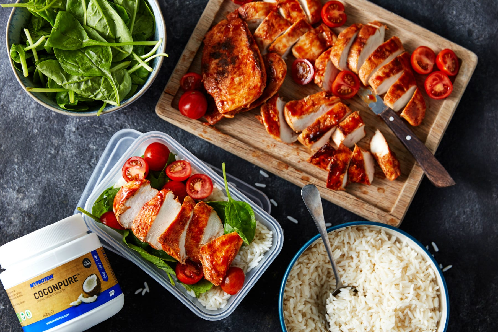

Grilled Glory Bowl | Barbeque Chicken and Rice

Creator Of Recipe
Description
Fuel your workouts with this high-protein, healthy BBQ chicken and rice meal prep. Ready in just 15 minutes, it’s the perfect balance of flavor and nutrition to keep you energized and satisfied. Packed with lean chicken, wholesome rice, and fresh veggies, it’s a no-fuss way to stay on track with your fitness goals.
Make your meal prep work as hard as you do!
Ingredients
- 1 tbsp. Coconut Oil
- 450g cooked white rice
- 600g chicken breast
- 6 handfuls spinach
- 75g sweetcorn
- 3 tbsp. barbecue sauce
- 1 tsp. sweet paprika
- 9 cherry tomatoes
How To Prepare
- Cut each raw chicken breast in half horizontally.
- Rub the barbecue sauce, paprika, salt, and pepper all over the chicken.
- Add the coconut oil to a hot frying pan or griddle and place the chicken in the pan over a medium heat for around 4 minutes on each side. Turn over and once thoroughly cooked, place on a plate to cool.
- Add 2 handfuls of the spinach into the base of your plastic Tupperware tubs.
- Cook rice according to instructions on the pack and allow to cool. Fill your tubs on one side.
- Spoon the sweetcorn on top of the rice and add sliced tomatoes.
- Finish the prep by adding the cold chicken and place in the fridge.